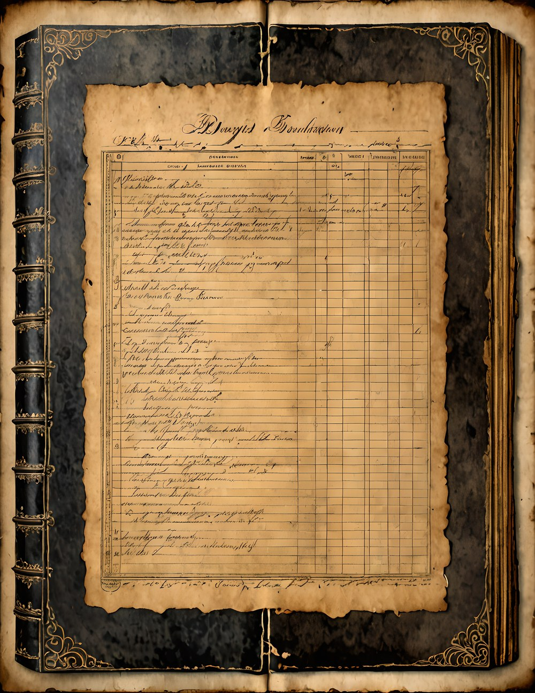
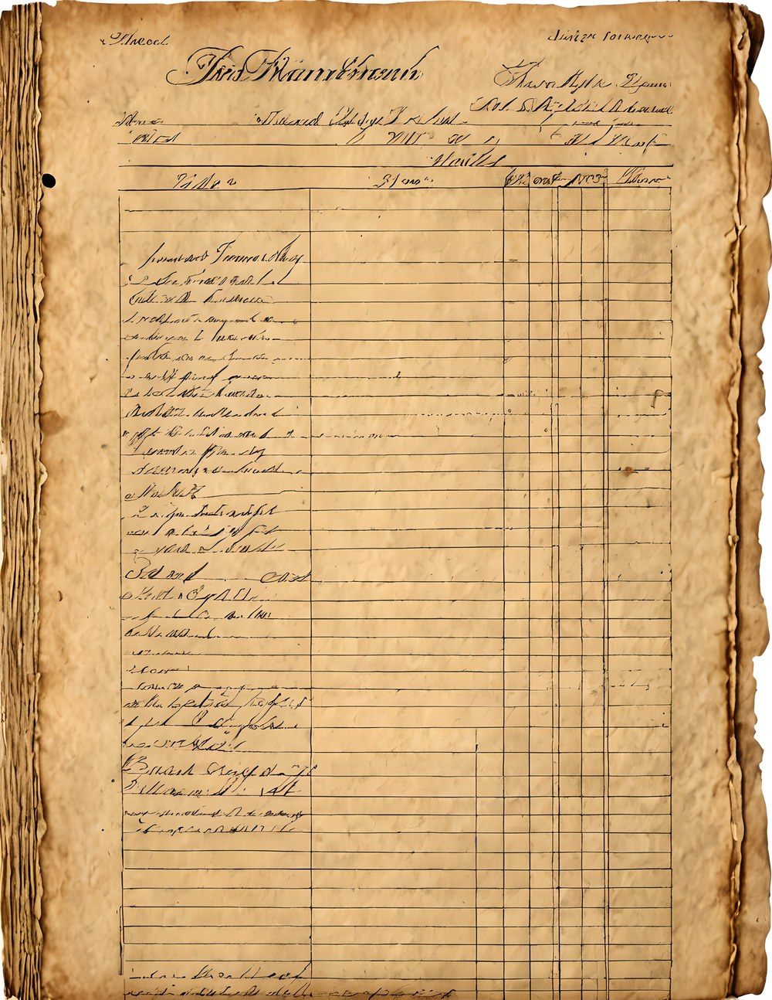
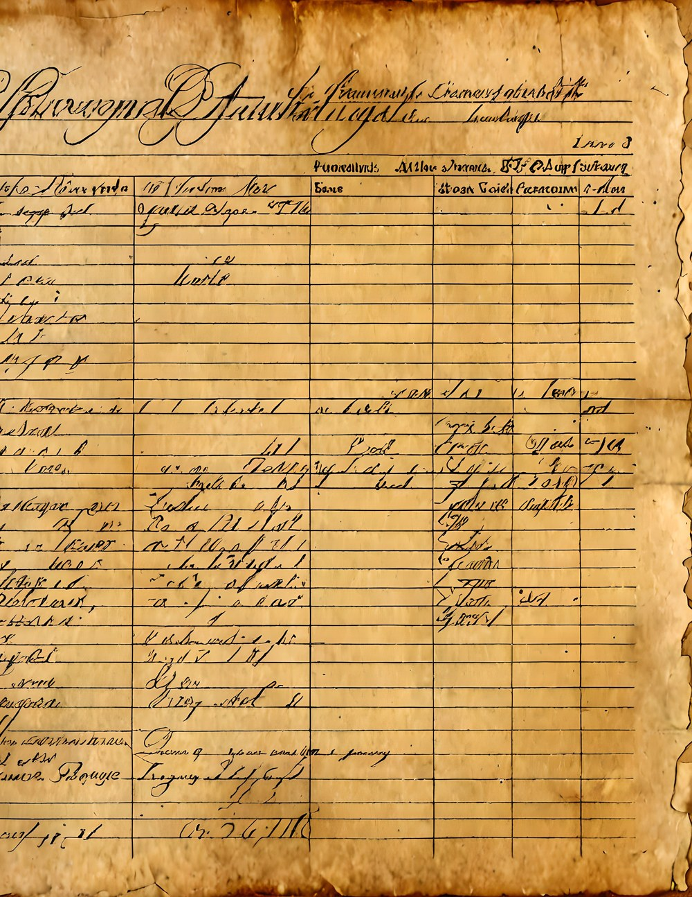
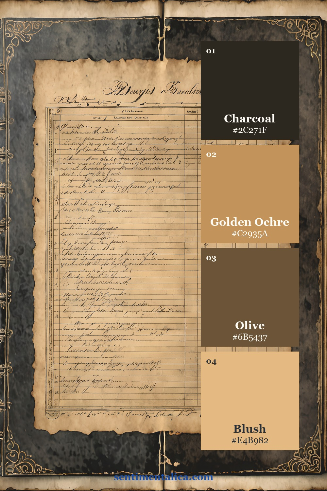
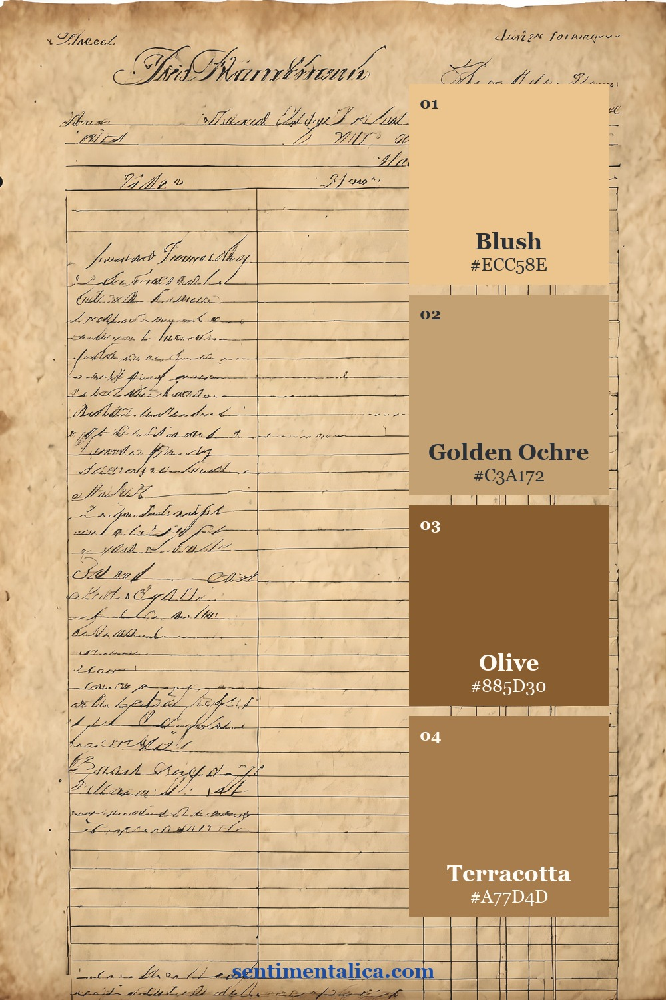
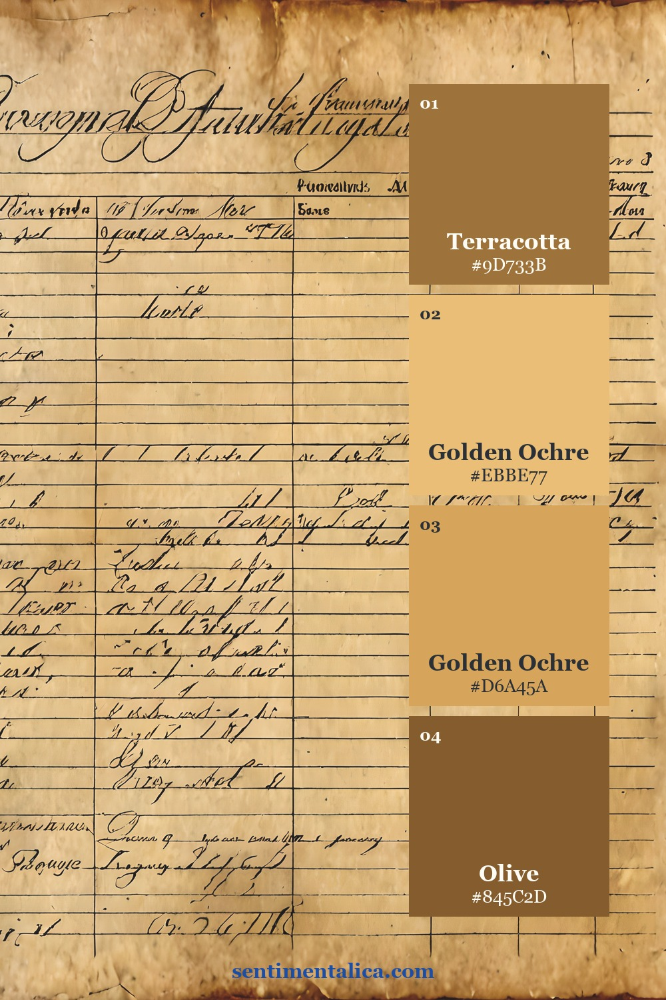

A strong themed journal does not come from using every image at once. It comes from choosing a small visual vocabulary, repeating it calmly, and leaving enough open space for real notes and memories. Ledger Neutral offers a coherent starting world without deciding what your finished journal must say.
Begin with three real pages, not a pile
Choose one page for structure, one for atmosphere, and one for small details. Look at them together before printing more. The strongest page should set the scale and mood; the quieter pages can become pockets, writing cards, borders, or narrow echoes elsewhere in the journal.



Let the artwork choose the palette
Pull one dark anchor, one clean paper light, one supporting middle color, and one distinctive accent from each page. These roles are more useful than a list of every color present. Use the anchor sparingly, repeat the light generously, and let the accent appear in only two or three small places.



Give each spread one practical job
Before decorating, decide what the spread will hold: a date, a short story, a photograph, a list, or a pocket of small evidence. The job protects the page from becoming a display of supplies. Add imagery only when it helps frame, separate, or support that purpose.
Keep the largest artwork away from the exact center. A calm margin beside it creates a natural place for handwriting. If the source page is detailed, pair it with plain cream or lightly distressed paper rather than another equally busy print.
Print a small test before committing
Print one chosen page at reduced size or in draft quality, then test it beside the photograph, note, or found object you plan to keep. Screen color can feel louder than paper color, and a border that looks delicate on a monitor may dominate a small journal. The test shows whether the artwork is supporting your material or competing with it.
If the page feels too strong, crop a quieter section instead of lowering every color. If it feels flat, repeat the accent with thread, pencil, or a narrow tab. Small corrections preserve the character of the artwork while giving your own evidence priority.
Repeat one shape to make the journal feel whole
A label, narrow tab, rounded corner, or torn vertical strip can travel through several pages. Repetition is quieter than adding more themed objects, and it makes even pages created weeks apart feel related. Change the material while keeping the shape familiar.
Add your own evidence last. A real name, route, weather note, photograph, or remembered phrase should remain the most specific thing on the page. Printable art gives the journal a world; the detail only you can supply gives it a reason to exist.
Before calling the spread finished, cover the decorative layers with your hand and read only the personal material. If the date, sentence, or photograph still carries the page, the balance is right. If the memory disappears, remove one ornamental piece and give the evidence more space.
Browse more grounded themes and practical page methods in the Sentimentalica journal archive.